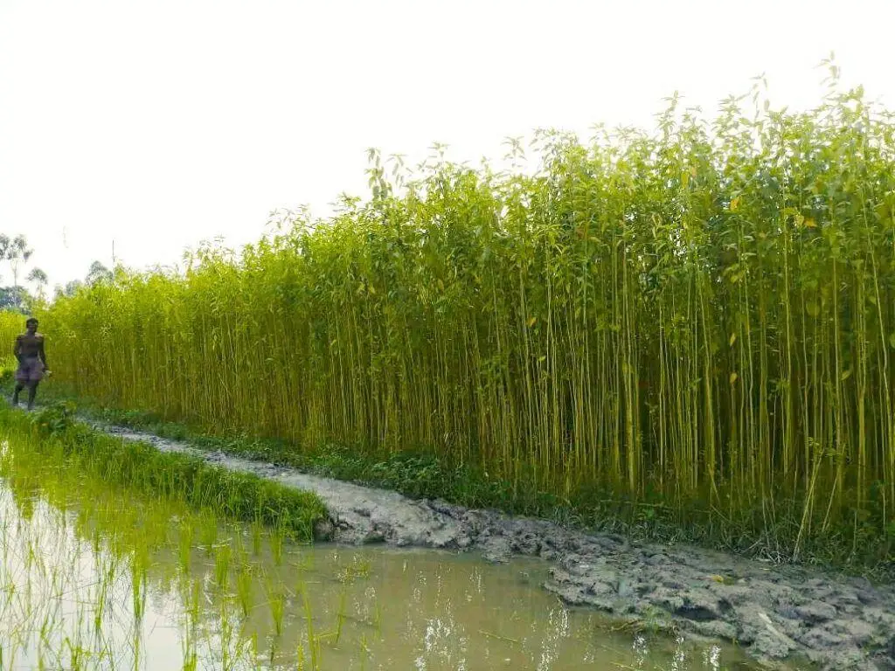

Jute: The Golden Fiber Crop

Uses of Jute
Jute is widely known as the "golden fiber" and is used for various purposes:
- Textiles: Used to produce burlap, sacks, and various fabrics.
- Paper: Jute pulp is used to make durable paper products.
- Ropes and Twines: Commonly used for making ropes, twines, and nets.
- Biodegradable Alternatives: Jute products are an eco-friendly alternative to plastic.
Types of Jute
There are mainly two types of jute used for commercial purposes:
- White Jute (Corchorus capsularis): Commonly grown and used for making bags, ropes, and textiles.
- Tossa Jute (Corchorus olitorius): Known for its strength and finer quality, used in premium products.
Growth Requirements for Jute
Jute grows best in the following conditions:
- Climate: Hot and humid climates with temperatures between 24-37°C.
- Soil: Loamy, well-drained soils that retain moisture well.
- Water: Jute requires plenty of water, especially during the growth period and rainfall is essential for jute farming.
Natural Fertilizers for Jute
Natural fertilizers play a crucial role in jute farming:
- Compost: Provides essential nutrients and enhances soil health.
- Green Manure: Cover crops like legumes can enrich the soil with nitrogen, benefiting jute crops.
- Farmyard Manure: A balanced organic fertilizer that improves soil structure and fertility.
Pest and Disease Prevention
While jute is relatively resistant, preventive measures are important:
- Stem Rot: Prevent by rotating crops and improving drainage in jute fields.
- Hairy Caterpillars: Can be controlled using natural repellents and organic insecticides.
- Root Knot Nematodes: Manage with crop rotation and organic soil treatments.
Benefits of Jute
- Eco-Friendly: Jute is biodegradable and an excellent alternative to synthetic materials.
- Soil Health: Jute helps maintain soil fertility, as it sheds leaves during growth, enriching the soil.
- Renewable: Jute is a fast-growing crop, making it a sustainable fiber source.
Frequently Asked Questions
1. How long does it take to grow jute?
Jute typically takes about 4-5 months from planting to harvest.
2. Is jute suitable for all climates?
No, jute grows best in hot and humid climates, particularly in tropical regions.
Back to Crop List